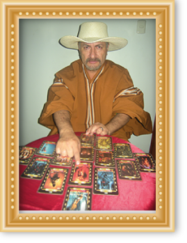

From the department
of Piura, province of Huancabamba, district of Talaneo for all of Peru and the world. The
greatest and wisest connoisseurs of the occult sciences GIORDANO y
VERENICE, soulmates, connoisseurs of curanderismo, experts in doing all kinds of
work that you need for your happiness, your business, studies, your upbringing, crops and
your love relationship. If you find yourself submerged in a sea full of suffering, crying,
tears and lamentations. Today we must thank the king of this vast universe for making
available to all the people who need help from us who are professional experts in the occult
and the paranormal, such as studies in parapsychology, astrology, demonology and occult
sciences, we GIORDANO Y
VERENICE use all our knowledge and mental power to achieve your happiness .
With the sole objective of helping and helping in the most difficult and painful moments of
your life.
 To you who is separated from your partner by black hands or third
parties and if you have fights, quarrels, discussions inside your home and overnight you see
that your home is collapsing, be very careful because this may be the product of evil or
sorcery caused by someone who is envious or who wants to end your relationship by breaking
your happiness that you may have managed to build over many years.
To you who is separated from your partner by black hands or third
parties and if you have fights, quarrels, discussions inside your home and overnight you see
that your home is collapsing, be very careful because this may be the product of evil or
sorcery caused by someone who is envious or who wants to end your relationship by breaking
your happiness that you may have managed to build over many years.
Do not allow evil, greed to end a wonderful relationship, strengthened for so long, each
couple has the knowledge that to carry a relationship forward investment is needed, but not
an investment of money, but a sincere and pure investment of feelings. , love understanding
and above all patience. Let us help you make your relationship last forever.

From the department of Piura, province of Huancabamba, district of Talaneo for all of Peru and the world. The greatest and wisest connoisseurs of the occult sciences GIORDANO and VERENICE, soul mates, connoisseurs of quackery, experts in doing all kinds of work that you need for your happiness, your business, studies, your upbringing, crops and your love relationship .

From the department of Piura, province of Huancabamba, district of Talaneo for all of Peru and the world. The greatest and wisest connoisseurs of the occult sciences GIORDANO and VERENICE, soul mates, connoisseurs of quackery, experts in doing all kinds of work that you need for your happiness, your business, studies, your upbringing, crops and your love relationship .

From the department of Piura, province of Huancabamba, district of Talaneo for all of Peru and the world. The greatest and wisest connoisseurs of the occult sciences GIORDANO and VERENICE, soul mates, connoisseurs of quackery, experts in doing all kinds of work that you need for your happiness, your business, studies, your upbringing, crops and your love relationship .
Dear brothers Giordano and Verenice, we offer you this page so that you can receive the
guidance that will illuminate your path forever and that you can enjoy much love and
happiness next to your loved one. Our strongest and most frequent work is white unions and
love spells, in our field we focus on destroying witchcraft and guiding you in tarot
reading, coca leaf, corn, quartz, etc.
Since we obtained the gift of healing, of uniting, of tying up and of being able to solve
insoluble problems.

We have been at your disposal for many years to be able to help you recover your partner,
your home, your family, your relationship.
To all the people who day after day are suffering for love or have been abandoned by the one
they love so much, or suddenly changed their mind overnight and you do not know what the
cause is because it is time to trust us and put your case in our hands and you will verify
the effectiveness and excellence of our work, many people attest, testimonies of the
effectiveness of our work. Because when a person truly loves, he fights to the last
consequences with the sole objective of recovering his happiness.
Making a love tie is not going to cause you a guilty conscience, nor is it going to bring
you problems or fights or arguments or anything negative because the person who makes the
tie does it out of love, and the one who loves does not hurt or injure the other person. It
will be the love of your life forever.
Giordano and Verenice are available 24 hours a day to be able to advise you psychically and
emotionally. Do not feel any doubt before a love spell of a wonderful union, we guarantee
that this is the solution to the problem of love that overwhelms you and is causing you
pain, call now, make your consultation completely free and we will answer you.

We are the most powerful sorcerers in all of Peru, we have the gift of awakening our
intuitive faculties and getting in touch with our inner world to carry out all kinds of work
to counter misfortune, evil, envy, greed, revenge, damage, deceit, disloyalty , falsehood,
betrayal, hypocrisy, jealousy, infidelity, failures.
Giordano and Verenice:
With our great mental power and our ancestral knowledge. We will protect you from evil
sorcerers, from damage and curses. We will give you a shield of protection against all evil,
against all enemies who want to destroy you.
Brother, never lose faith, trust, much less hope, today do not feel alone, if your success
disappears, you do not get peace, you suffer intense torments. With the strength that the
Mighty One has given us, our mental and spiritual strength, we will help you win. The fear
of your enemies, the damage, the evil, the curse, your problems, your most hidden fears and
the obstacles you are going through, driving away all those who are cruel to you, your
family and who enjoy and enjoy your suffering.
Now if for various reasons you feel that these circumstances overwhelm you, brother (a) for
your destiny in our hands, then we GIORDANO AND VERENICE will help you change your life, to
recover your relationship, your home, your family and you will recover the love of that
person forever.
Leave the past behind and head towards the future, changing everything bad for love,
harmony, forgiveness, happiness, satisfaction, good wishes, humility, trust, understanding,
mercy, peace and faith.
Remember, brother, that faith is the certainty of what is hoped for and the conviction
of what is not seen.
It is up to you to make this decision now.

We offer you the most effective moorings on the entire planet. Moorings that will help you recover or
attract the person you love so much or with whom you feel attracted or in love.
Our moorings are % effective, and our clients are very grateful and today they enjoy the happiness and love
they thought they had lost and testify to our successful and effective work carried out in different
provinces of Peru and many countries of the world.

INTERNATIONAL LOCAL INQUIRIES
E-MAIL : santerosgiordanoyverenice@gmail.com
DIRECT SANTERO GIORDANO AND VERENICE
fijo:(51)7243426 Cel:(51)935821296 - (51)982446791 - MOVIL: (00511) – 935821296


{kind=link}
{kind=link}
{kind=link}